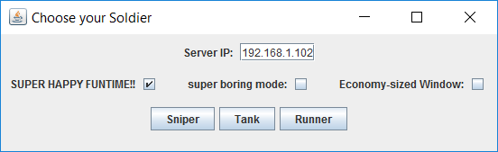

Victors Game is an AI experiment originally designed as a fun
side project meant to be a competition to see who can make the coolest AI.
Because it looked like it would be fun for people to play, I networked it so
multiple people could play at a time with each one controlling their own character.
You can download the general client version here. The server version is still being
port-forwarded, but should work if you are in the local area network of the running
server. Download Victor's Game here!
